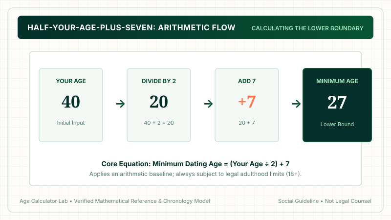
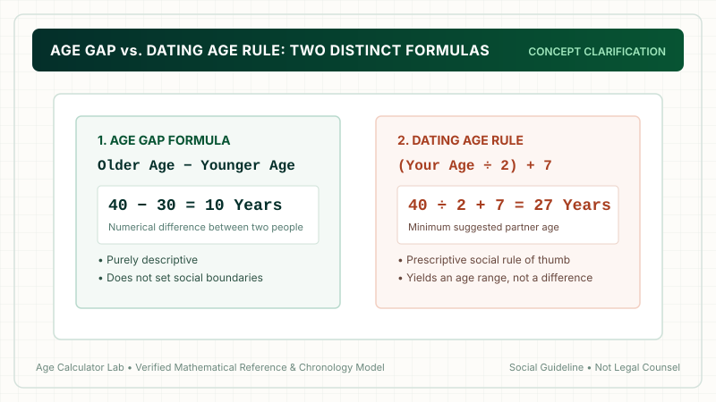

“Half your age plus seven” is a popular rule of thumb that suggests the minimum socially acceptable age for a romantic partner. To calculate it, divide your age by 2 and add 7: (Your Age ÷ 2) + 7. For someone who is 40 years old, 40 ÷ 2 = 20, plus 7 = 27 years old. The inverse formula for the maximum dating age is (Your Age − 7) × 2, which yields 66 for a 40-year-old. You can verify your exact numbers instantly using our Dating Age Calculator.
1. What Does "Half Your Age Plus Seven" Mean?
The phrase half your age plus seven refers to a widely recognized social guideline intended to determine whether an age gap between two romantic partners is socially conventional. Rather than setting a flat numerical limit (like "never date someone more than 5 years younger"), the rule scales dynamically with chronological age.
Because human maturity and life stages evolve more slowly as people grow older, the formula allows for wider age differences among older adults while keeping age gaps tightly constrained during young adulthood.
2. The Formula Explained Step-by-Step
The mathematical operation consists of two basic arithmetic steps: halving an input number, followed by an addition of a constant offset (7):
The Minimum Dating Age Formula
Worked Example for Age 32:
Step 1: Divide 32 by 2 ➔ 16
Step 2: Add 7 ➔ 16 + 7 = 23
Result: The rule-aligned minimum partner age is 23 years old.

3. The Three-Step Calculation Flow
Whenever you apply this formula mentally or on paper, think of it as a three-stage filter:
- Input Stage: Start with your current completed age in whole years.
- Halving Stage: Divide that age by two. If your age is odd (e.g., 35), you can either keep the decimal (17.5 + 7 = 24.5) or round to the nearest whole integer (25).
- Offset Stage: Add the constant number seven. The resulting figure marks the lower boundary of the rule.
4. Historical Origins and Background
Where did this formula originate? Although frequently attributed to folklore, the rule has a documented history originating in 19th-century France. Early iterations appeared as advice for older French gentlemen seeking a bride, establishing an idealized age ratio rather than a modern reciprocal dating range.
The rule gained broad English-language prominence in 1901 when Anglo-French author Max O'Rell published Her Royal Highness Woman, stating: "A man should marry a woman half his age, plus seven." In the decades since, popular culture and modern media transformed this historic matrimonial formula into a general reciprocal dating guideline applicable to all genders.
5. Minimum Dating Age Chart (18 to 70)
The table below displays the calculated minimum dating age across various adult ages:
| Your Age | Half Your Age | Add 7 | Minimum Dating Age | Max Allowable Younger Gap |
|---|---|---|---|---|
| 18 | 9 | +7 | 18* (Adult Floor) | 0 years |
| 20 | 10 | +7 | 18* (Adult Floor) | 2 years |
| 22 | 11 | +7 | 18 years | 4 years |
| 24 | 12 | +7 | 19 years | 5 years |
| 26 | 13 | +7 | 20 years | 6 years |
| 28 | 14 | +7 | 21 years | 7 years |
| 30 | 15 | +7 | 22 years | 8 years |
| 35 | 17.5 | +7 | 24.5 (or 25) | 10 years |
| 40 | 20 | +7 | 27 years | 13 years |
| 45 | 22.5 | +7 | 29.5 (or 30) | 15 years |
| 50 | 25 | +7 | 32 years | 18 years |
| 60 | 30 | +7 | 37 years | 23 years |
| 70 | 35 | +7 | 42 years | 28 years |
*Note: For ages 18–21, raw arithmetic yields numbers below 18. An absolute adult legal floor of 18 must be enforced.
6. Calculating the Maximum Dating Age
A frequent question is: "If this formula gives me the youngest person I can date, how do I calculate the oldest person I can date?"
Because the rule is reciprocal, the person who is older than you must also satisfy the formula when you are their minimum partner. By using basic algebra to invert the equation, we derive the Maximum Dating Age Formula:
The Maximum Dating Age Formula
Worked Example for Age 30:
Step 1: Subtract 7 ➔ 30 − 7 = 23
Step 2: Multiply by 2 ➔ 23 × 2 = 46
Result: For a 30-year-old, the calculated upper boundary is 46 years old.
7. Dating Age Range Summary Table
Combining both boundaries gives a complete, symmetric dating age bracket:
| Your Age | Minimum Partner Age | Maximum Partner Age | Full Dating Age Range |
|---|---|---|---|
| 22 | 18 | 30 | 18 to 30 years old |
| 25 | 19.5 (20) | 36 | 20 to 36 years old |
| 30 | 22 | 46 | 22 to 46 years old |
| 35 | 24.5 (25) | 56 | 25 to 56 years old |
| 40 | 27 | 66 | 27 to 66 years old |
| 45 | 29.5 (30) | 76 | 30 to 76 years old |
| 50 | 32 | 86 | 32 to 86 years old |

8. Half Your Age Plus Seven vs Age Gap
It is essential to distinguish between measuring an age difference and applying this rule of thumb:
- Age Gap (Descriptive Arithmetic): Measures the exact time between two people:
Older − Younger. For guidance on calculating this, see our article on how to calculate an age gap. - Half-Your-Age-Plus-Seven (Prescriptive Social Filter): Calculates a boundary range for one person:
(Age ÷ 2) + 7.
9. Why the Rule Breaks Down for Younger Ages
A critical limitation of the formula is its behavior below age 22. If you plug in 18 years old:
18 ÷ 2 + 7 = 16 years old
While 16 is mathematically correct according to the equation, relationships between legal adults and minors are subject to strict statutory laws and age-of-consent requirements. Our tools and articles strictly mandate that mathematical outputs below 18 must never be treated as adult dating recommendations.
Statutory majority laws (18+) strictly supersede social formulas. An adult dating someone under the age of majority carries profound legal, ethical, and societal ramifications that no social rule of thumb can validate.
10. Why the Range Widens with Age
Notice that for a 20-year-old, the rule allows an age gap of only 2 years down to 18. But for a 50-year-old, the rule allows an 18-year gap down to 32!
Why does the range widen so dramatically? Because neurological development, financial independence, career establishment, and life experience stabilize substantially after your twenties. Two adults in their 40s and 50s are peers with mature judgment, whereas a 20-year-old and a 16-year-old inhabit completely different developmental realms.
11. Critical Limitations of the Formula
While mathematically interesting, the half-your-age-plus-seven rule has several key limitations:
- Zero Empirical Compatibility Proof: Scientific studies in relationship psychology find no correlation between whether a couple satisfies this formula and their long-term marital happiness.
- Cultural Specificity: The formula reflects Western social norms; marital patterns in other cultures differ markedly.
- Arbitrary Offset: The constant number 7 has no biological or psychological justification—it is purely a mathematical convention.
12. Using the Dating Age Calculator
To avoid manual math, enter your age into our verified Dating Age Calculator. The tool displays your lower bound, upper bound, and full dating age range in seconds, accompanied by demographic insights.
13. Frequently Asked Questions
What is the half-your-age-plus-seven rule?
The half-your-age-plus-seven rule is a popular social rule of thumb used to determine the minimum socially acceptable age of a romantic partner. By dividing your age by two and adding seven, it calculates a suggested lower boundary.
How do you calculate the minimum dating age with this rule?
Divide your age by 2 and add 7. For example, if you are 40 years old: 40 ÷ 2 = 20, then 20 + 7 = 27. The suggested minimum dating age is 27.
How do you calculate the maximum dating age?
The maximum dating age uses the algebraic inverse: subtract 7 from your age and multiply by 2. For age 40: (40 − 7) × 2 = 33 × 2 = 66 years old.
Is half your age plus seven a legal law?
No. It is entirely a cultural rule of thumb with zero legal authority. Statutory laws regarding the age of majority (18+) and age of consent strictly govern romantic relationships, overriding any social formulas.
Why doesn't the rule work for someone who is 18?
For an 18-year-old, 18 ÷ 2 + 7 = 16. However, between legal adults, relationships involving minors can violate statutory laws. Responsible calculators enforce an absolute adult floor of 18.
Where did the half-your-age-plus-seven rule come from?
Its earliest recorded origins date back to 19th-century French culture and novels, notably in Max O'Rell's 1901 book 'Her Royal Highness Woman', where it originally described an idealized bride age for an older man before evolving into a modern reciprocal guideline.
Why does the acceptable age range widen as you get older?
Because human development and life stages stabilize in mature adulthood. A 5-year difference between 18 and 23 is a vast life-stage divide, whereas a 15-year difference between 50 and 65 often involves peers sharing identical life and retirement milestones.
Does this formula guarantee relationship compatibility?
No. An arithmetic rule of thumb cannot evaluate communication, shared values, emotional health, or relationship satisfaction.
14. Final Takeaway
The half-your-age-plus-seven rule provides a quick, widely understood mathematical heuristic for gauging social age conventions. However, adult relationships succeed based on mutual respect, emotional alignment, and shared values—not arithmetic equations.

Methodology & Verification Standards
- Mathematical Model: Half-Your-Age-Plus-Seven heuristic (
Min = Age/2 + 7,Max = (Age - 7) * 2). - Guardrails: Absolute statutory adult floor applied at age 18.
- Editorial Purpose: Cultural, sociological, and computational reference.
- Review Date: October 2026.